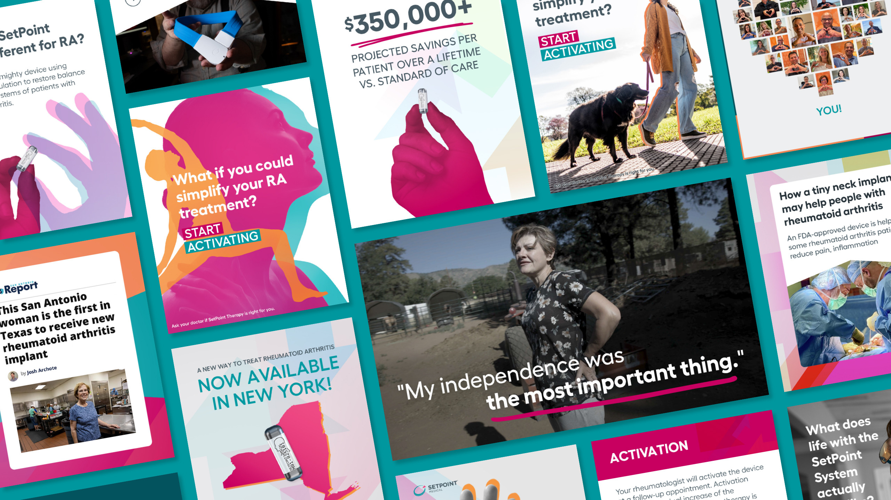
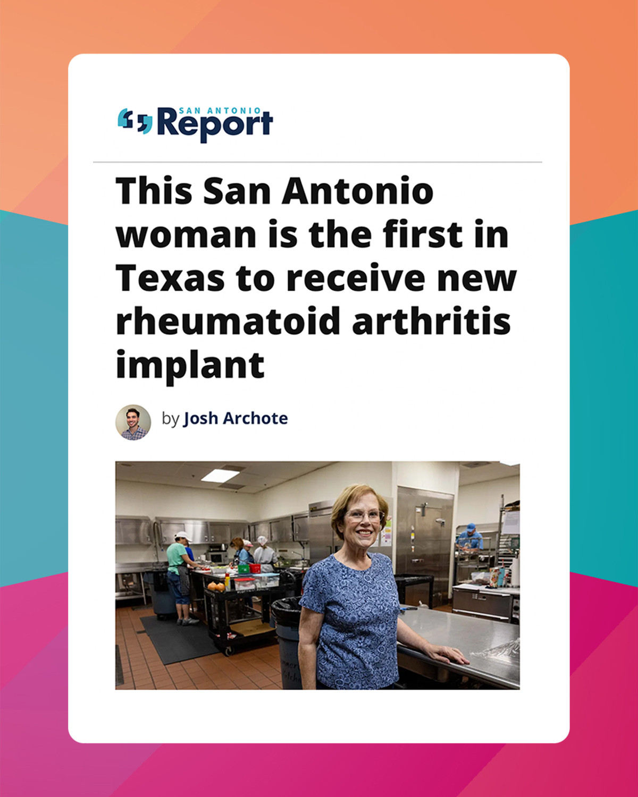
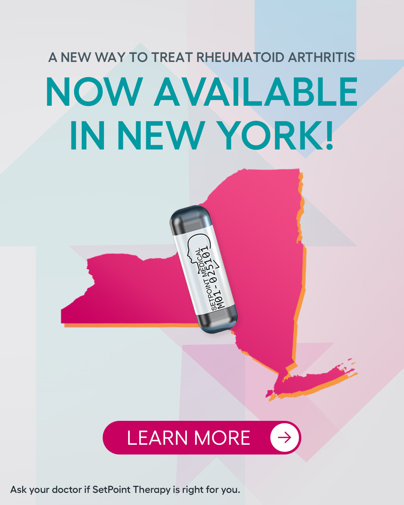
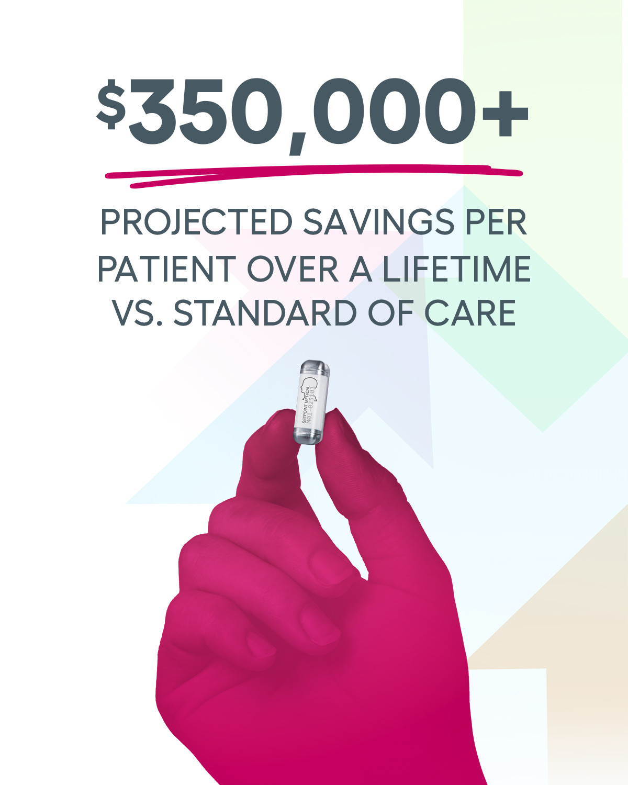
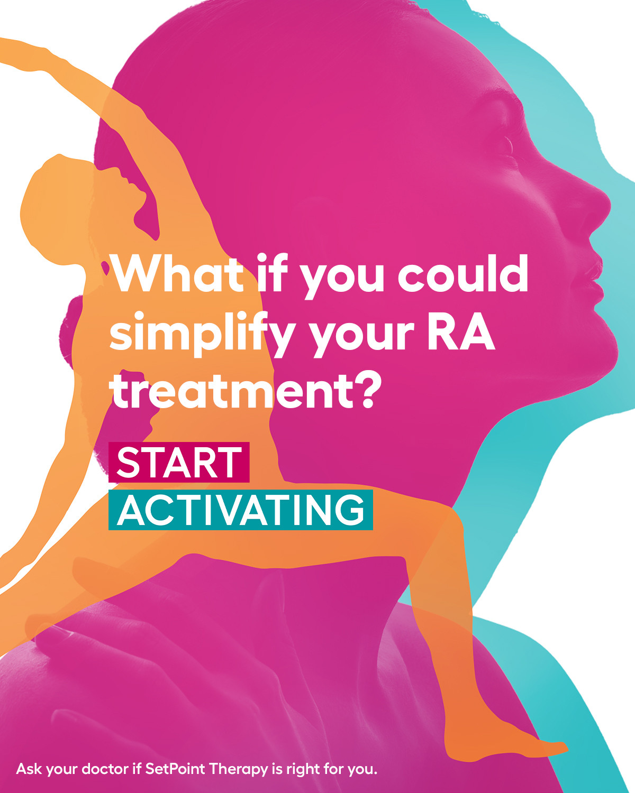
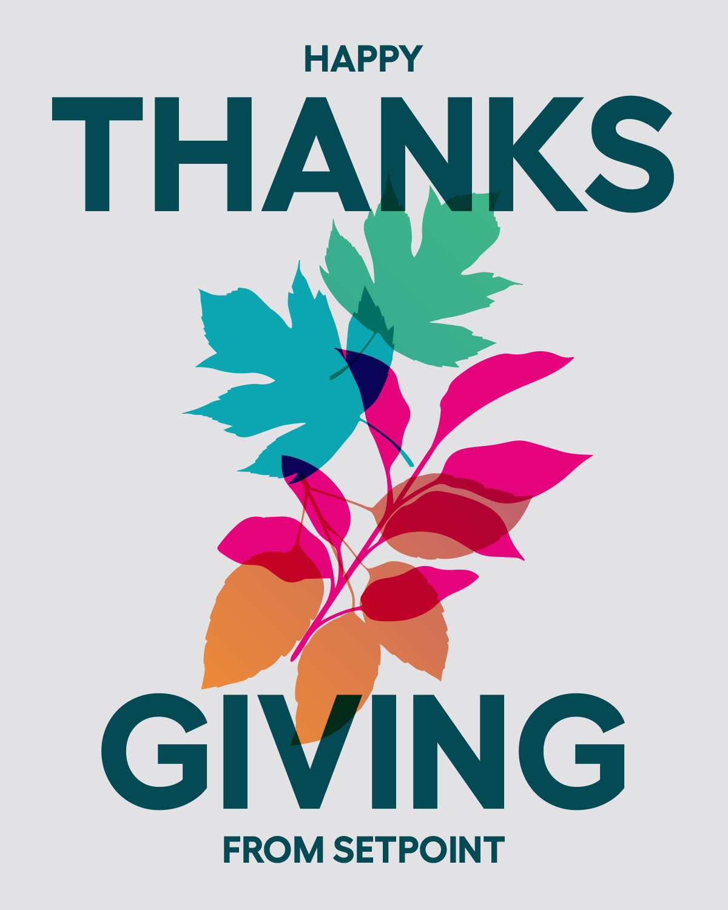

Back in 2021, SetPoint Medical was a clinical stage company pioneering a revolutionary new way to treat autoimmune diseases like rheumatoid arthritis. But as they worked to recruit patients into their pivotal stage clinical trial for FDA approval of the device, they found themselves falling short of their recruitment targets, threatening to delay the progress of their trial. SetPoint needed a marketing partner who could hit the ground running with smart, creative solutions for building a better online presence for the trial, fortifying their patient funnel, supporting patient education about this unique investigational therapy, and, ultimately, driving large numbers of potentially qualified leads to trial sites around the country.
This wasn't just selling a product or collecting email signups. We were asking people living with a painful, debilitating autoimmune disease to consider a never-before-offered surgical solution that at the time was investigational. There were reasonable fears around participating, defined limits on what we could say or promise prior to FDA approval, and inherent challenges in reaching the right audience of potentially qualified patients for this trial.
We built the recruitment engine end to end: a seamless intake survey on the website, aspirational creative and messaging on social, and expert ad targeting across platforms. Where before prospective patients were being given a phone number to pursue on their own, our system led qualified survey takers directly to schedule a call with a third-party call center partner, who would further vet the leads and then route the most qualified onto the trial sites. Weekly meetings with the client supported continuous budget optimizations in response to on-the-ground insights about which trial sites were performing best and where needed the most help with new patient leads.
It worked. The trial concluded within its desired timeframe, and in July 2025, based on the data from SetPoint's pivotal trial, the FDA approved the SetPoint System — the first neuroimmune modulation therapy of its kind, and the first-ever device-based therapy to treat rheumatoid arthritis.
What we built in the trial phase of our work with SetPoint laid the groundwork for successful commercial launch. Through our strategic approach to patient recruitment, we had accumulated a database of prospective patients, poised for further outreach during commercial ramp-up. Our close partnership with SetPoint also enabled us to help them plan for commercial launch during the downtime while they were waiting on FDA approval. In the background, we were visiting trial patients to film their stories, building out a commercial-stage website full of insights and audience journeys for both patients and providers, and getting everything polished up, approved, and ready to deploy the moment that FDA approval was granted. Since then, we've continued to support our close partner as they've received waves of national media attention, all while taking a steady, measured approach to rolling out this first-of-its-kind therapy in select territories across the country.





